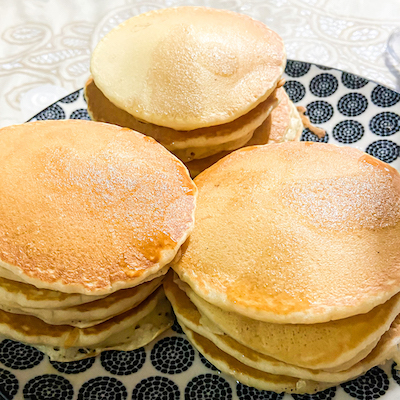

Fluffy Pancakes

Description:
Tall and fluffy. These pancakes are just right.
Topped with strawberries and whipped cream, they are impossible to resist.
Ingredients:
- 3/4 Cup Milk
- 2 Tablespoons White Vinegar
- 1 Cup All-Purpose Flour
- 2 Tablespoons White Sugar
- 1 Teaspoon Baking Powder
- 1/2 Teaspoon Baking Soda
- 1/2 Teaspoon Salt
- 1 Egg
- 2 Tablespoons Butter (Melted)
- Cooking Spray
Method:
- Combine milk with vinegar in a medium bowl and set
aside for 5 minutes to "sour".
- Combine flour, sugar, baking powder, baking soda, and
salt in a large mixing bowl. Whisk egg and butter into
"soured" milk. Pour the flour mixture into the wet
ingredients and whisk until lumps are gone.
- Heat a large skillet over medium heat, and coat with
cooking spray. Pour 1/4 cupfuls of batter onto the skillet,
and cook until bubbles appear on the surface. Flip with a
spatula, and cook until browned on the other side.